В 1708 году Бобровское было разграблено сообщниками Булавина. В 1711 году часть жителей срытого Азова была поселена в Боброве в особой слободе получившей название Азовская. В 1779 году Бобровская слобода преобразована в город Бобров, который некоторое время спустя стал административным центром Бобровского уезда.
Естественный ареал японских макак, которые являются самыми северными в мире обезьянами, простирается до севера острова Хонсю. Однако в 1972 году в Техасе в дикие условия искусственно была заселена небольшая популяция этого вида.
Японские макаки живут во всех видах лесов — от субтропических до горных, где питаются листьями, плодами, корнями растений, а также насекомыми, мелкими позвоночными и птичьими яйцами. Они даже ловят ракообразных, моллюсков и рыб в водоёмах.
На севере Японии, где снег может лежать до четырёх месяцев в году, а средняя температура зимы составляет −5 °C, обезьяны проводят морозы в горячих источниках. В холодные дни снежные обезьяны, находящиеся в тёплой воде, становятся её заложниками: когда они выходят за едой, из-за мокрой шерсти они мёрзнут ещё больше. Тогда у обезьян срабатывает своеобразная система дежурства для пропитания сидящей в воде группы: двое животных с сухой шерстью подносят пищу, пока другие сидят в воде[2].
Обитают японские макаки большими группами от 10 до 100 особей со строгой иерархией. В группу макак входят как самцы, так и самки.
 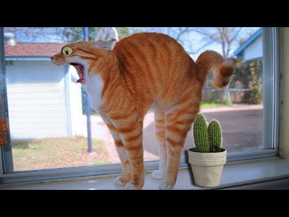
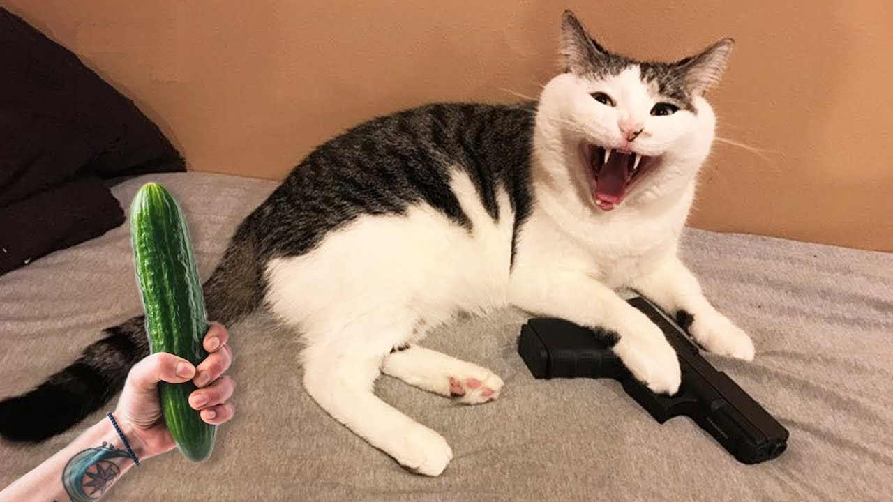
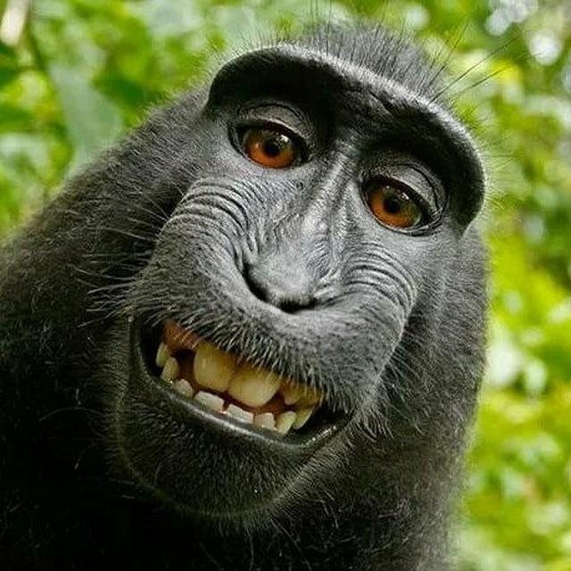
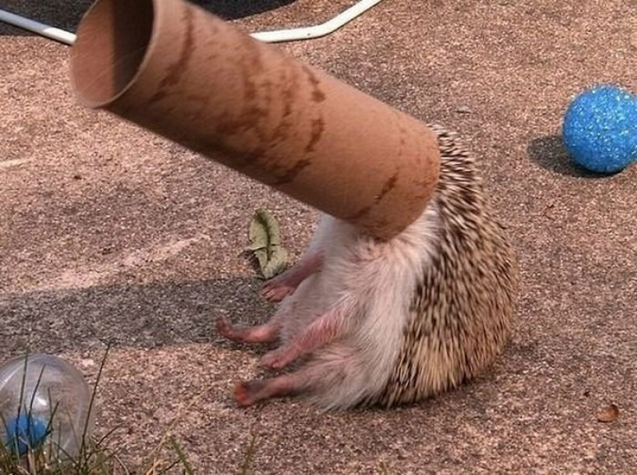
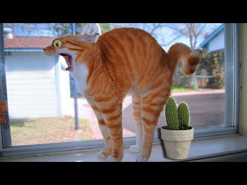
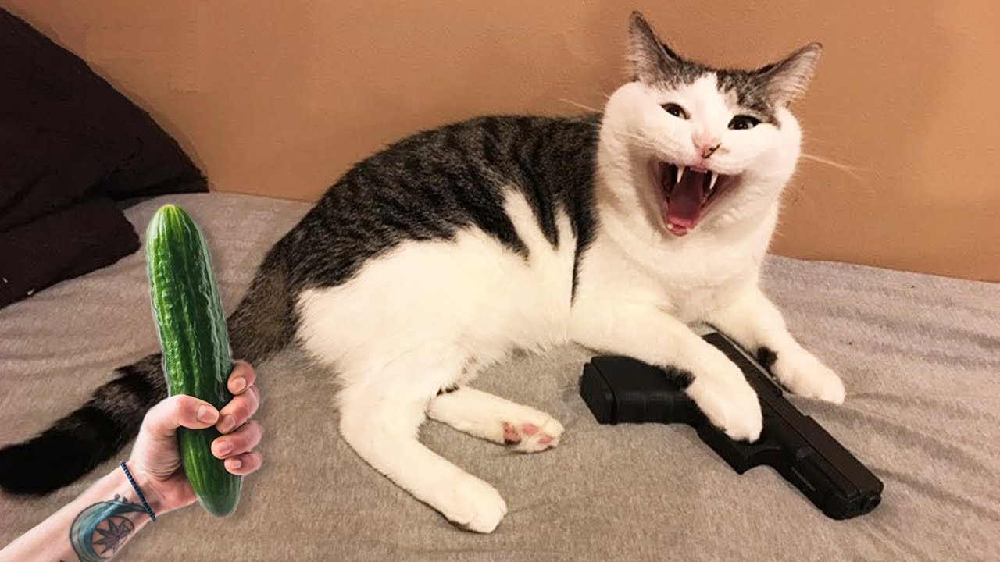
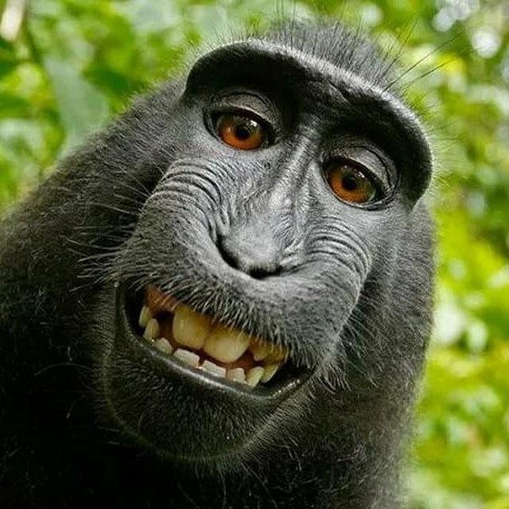
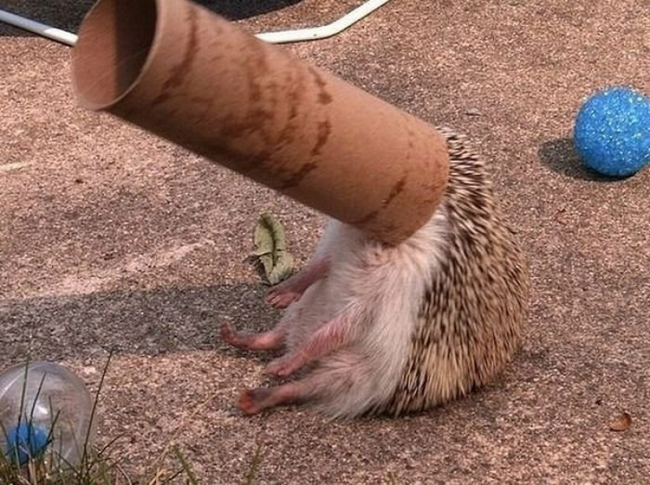

 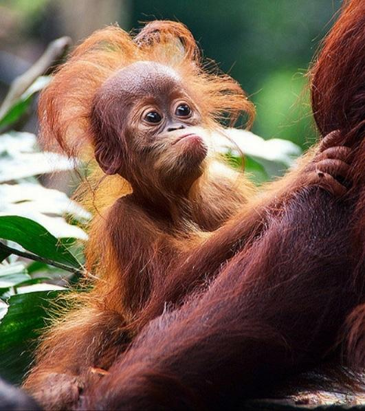
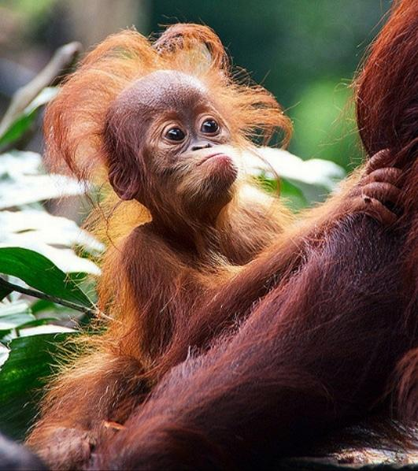
 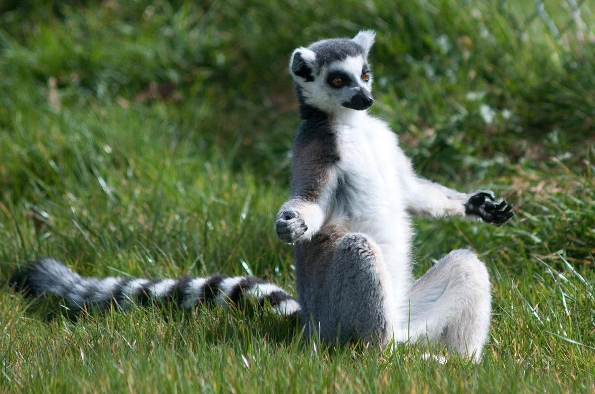
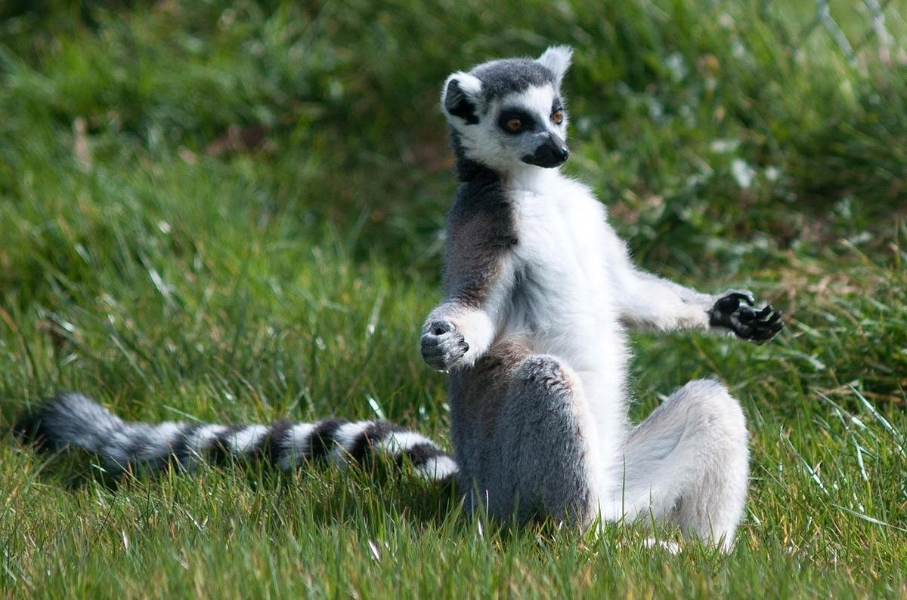